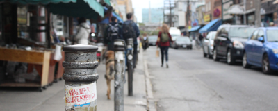

Portfolio Website
Putting my UX, Front End, and Design skills together to make a website showing my skills and capabilities to potential employers, and (hopefully!) finding a job. My website should be a showcase not only of my skills, but as who I am, and what I can bring to an organization.
The details
- Goal: Create a website to show my skills and earn an internship
- Team: Me! (UX, Front-End Dev/Design)
- Audience: Potential Employers, friends, classmates, my mom
- Duration: November 2019 - January 2020
- Skills: UX Design, HTML/CSS, JS, Prototyping, Brand Management, Content Writing
The challenge
In early 2020, I’m looking for internship opportunities over the summer months at tech and design companies alike.
Most internships nowadays within UX, Front-End Design, and tech require a portfolio.
Percentage of places which require a portfolio, show in graph
One of InVision’s top outlooks for 2020 is for business designers. Those with the heart of a designer, head of a business, hands to make things happen!
Some of my progress
Overall, the process of finding an internship can be intimidating. My first assumption of a portfolio site was that it is simply a showcase of the things a person has made, and I really doubted myself if what I’ve made is good enough to get hired.
Honestly, a really good resource in the development of my website was Cofolio.com. My friend Alyssa (LINKEDIN LINK) told me it was a showcase of people who found internships at major companies and the portfolio sites which helped to get them there. Looking through them, I was blown away at some of the works people were up to, and it was humbling to see the honesty and individuality of each person.
At the start of this project, I knew I had the capabilities to press the right buttons to have words display on the screen, but what I really wanted to show was my heart.
The true version one of my portfolio website came out of my beginner HTML/CSS course for school. It really taught me the framework of how to build a webpage, and started my interested in Web Design.